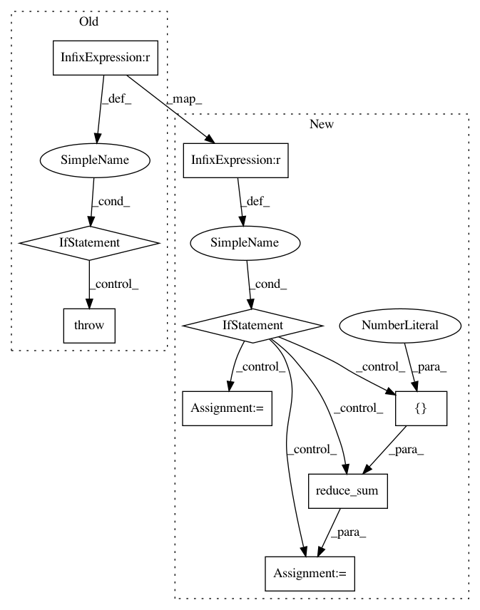

0f4fec30f00b29aa206e36fe875c83ff6149b618,keras/backend/tensorflow_backend.py,,batch_dot,#Any#Any#Any#,822
Before Change
(32, 1, 30)
```
if ndim(x) < 3 or ndim(y) < 3:
raise ValueError("Invalid dimensions for batch_dot: ", ndim(x), ndim(y))
if isinstance(axes, int):
axes = (axes, axes)
if axes is not None:
adj_x = None if axes[0] == ndim(x) - 1 else True
After Change
if isinstance(axes, int):
axes = (axes, axes)
if ndim(x) == 2 and ndim(y) == 2:
if axes[0] == axes[1]:
out = tf.reduce_sum(tf.mul(x, y), axes[0])
else:
out = tf.reduce_sum(tf.mul(tf.transpose(x, [1, 0]), y), axes[1])
else:
if axes is not None:
adj_x = None if axes[0] == ndim(x) - 1 else True
adj_y = True if axes[1] == ndim(y) - 1 else None
else:
adj_x = None
adj_y = None
// TODO: remove later.
if hasattr(tf, "batch_matmul"):
try:
out = tf.batch_matmul(x, y, adj_a=adj_x, adj_b=adj_y)
except TypeError:
out = tf.batch_matmul(x, y, adj_x=adj_x, adj_y=adj_y)
else:
out = tf.matmul(x, y, adjoint_a=adj_x, adjoint_b=adj_y)
if ndim(out) == 1:
out = expand_dims(out, 1)
return out
In pattern: SUPERPATTERN
Frequency: 3
Non-data size: 9
Instances
Project Name: keras-team/keras
Commit Name: 0f4fec30f00b29aa206e36fe875c83ff6149b618
Time: 2017-02-06
Author: yves@dbtune.org
File Name: keras/backend/tensorflow_backend.py
Class Name:
Method Name: batch_dot
Project Name: NifTK/NiftyNet
Commit Name: 29d9f7d43b66da4c25686134ff0366f72934a728
Time: 2018-12-13
Author: z.eaton-rosen@ucl.ac.uk
File Name: niftynet/layer/loss_segmentation.py
Class Name:
Method Name: dice_plus_xent_loss
Project Name: NifTK/NiftyNet
Commit Name: a6d07af248a7594b8dfedbf8368ddac3f901f3ec
Time: 2018-12-13
Author: z.eaton-rosen@ucl.ac.uk
File Name: niftynet/layer/loss_segmentation.py
Class Name:
Method Name: dice_plus_xent_loss